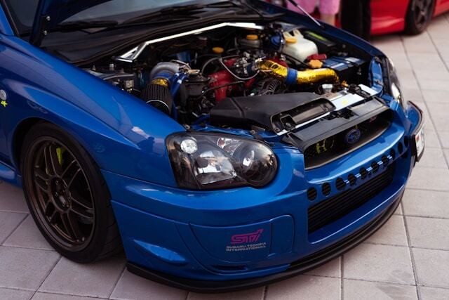

About Subaru WRX STI Style
Subaru WRX STI vehicles are known for their unique and distinctive style, blending functionality with a sporty and adventurous aesthetic. From the iconic Subaru grille to the rugged body lines, every design element reflects Subaru's commitment to innovation and individuality.
The aggressive and aerodynamic styling of the WRX STI, including its distinctive hood scoop and large rear spoiler, not only enhances its appearance but also improves performance by optimizing airflow and stability.
With a wide range of customizable options and accessories, Subaru enthusiasts can personalize their WRX STI to suit their individual tastes, ensuring that each vehicle is as unique as its owner.
Underneath its sleek exterior, the Subaru WRX STI boasts advanced engineering and cutting-edge technology, delivering a thrilling driving experience on both the road and the track.
With its symmetrical all-wheel drive system and precision-tuned suspension, the WRX STI offers unparalleled handling and control, allowing drivers to conquer any terrain with confidence.
The Subaru WRX STI community is a passionate and tight-knit group of enthusiasts who share a love for performance driving and adventure. From rally events to track days, WRX STI owners come together to celebrate their shared passion for Subaru's iconic sports car.
The WRX STI is powered by a turbocharged 2.5-liter four-cylinder engine, producing exhilarating power and torque for a thrilling driving experience.
Equipped with advanced performance features such as Brembo brakes, a driver-controlled center differential, and a sport-tuned suspension, the WRX STI delivers exceptional agility and handling on any road surface.
Safety is a top priority for Subaru, and the WRX STI comes equipped with a range of advanced safety features, including EyeSight Driver Assist Technology, Blind-Spot Detection, and Rear Cross-Traffic Alert, to help keep you and your passengers safe on every journey.
{kind=link}
Click on the image to get a close-up view!
{kind=link}